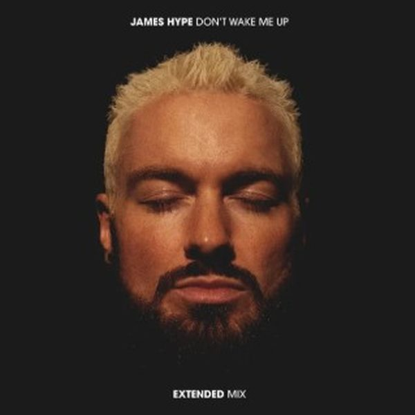

I 18 dischi e le top 6
 1
Let's Ride Away ft. Elle KingAVICII
1
Let's Ride Away ft. Elle KingAVICII
 2
Hit My Heart (TR3NACRIA Remix)Benassi Bros, Dhany
2
Hit My Heart (TR3NACRIA Remix)Benassi Bros, Dhany
 3
To the BackNicola Fasano, REDEEM
3
To the BackNicola Fasano, REDEEM
 4
NastyPiero Pirupa, LIONEEL
4
NastyPiero Pirupa, LIONEEL
 5
Get RightJoel Corry, Jennifer Lopez
5
Get RightJoel Corry, Jennifer Lopez

6 Don't Wake Me Up VIP mixJAMES HYPE 7
One MoreT.N.Y.
7
One MoreT.N.Y.
 8
X-RatedFunkdoobiest, Cloonee
8
X-RatedFunkdoobiest, Cloonee
 9
AntisocialMORGANJ
9
AntisocialMORGANJ
 10
Ven A BailarNico Zandolino, Derek Reiver
10
Ven A BailarNico Zandolino, Derek Reiver
 11
Get It StartedVizard
11
Get It StartedVizard
 12
AconteceuBante, Fakers
12
AconteceuBante, Fakers
 13
Esto Ta DuroBlack V Neck & Juntaro
13
Esto Ta DuroBlack V Neck & Juntaro
 14
We Could Be Love (Mark Hoffen & Rivo Remix)Hayden James & ARCO
14
We Could Be Love (Mark Hoffen & Rivo Remix)Hayden James & ARCO
 15
Last ForeverRaaban, Hypaton, TOOMANYLEFTHANDS
15
Last ForeverRaaban, Hypaton, TOOMANYLEFTHANDS
 16
LIVIN' LIFEMatt Hawk, CANCUN, I.D.O.
16
LIVIN' LIFEMatt Hawk, CANCUN, I.D.O.
 17
People DancingAlex Preston, Mo'Funk, Secret Weapons (AU)
17
People DancingAlex Preston, Mo'Funk, Secret Weapons (AU)
 18
Gimme ThaKapuzen
18
Gimme ThaKapuzen
La tracklist
- 1 Let's Ride Away ft. Elle King AVICII Universal Music
- 2 Hit My Heart (TR3NACRIA Remix) Benassi Bros, Dhany D:Vision
- 3 To the Back Nicola Fasano, REDEEM On The Way Records
- 4 Nasty Piero Pirupa, LIONEEL NONSTOP
- 5 Get Right Joel Corry, Jennifer Lopez Epic
- 6 Don't Wake Me Up VIP mix JAMES HYPE Universal-Island Records
- 7 One More T.N.Y. Under Town Ground
- 8 X-Rated Funkdoobiest, Cloonee Epic/Legacy
- 9 Antisocial MORGANJ HORIZN
- 10 Ven A Bailar Nico Zandolino, Derek Reiver No Definition
- 11 Get It Started Vizard Suxess
- 12 Aconteceu Bante, Fakers Tropica Records
- 13 Esto Ta Duro Black V Neck & Juntaro Retail Records
- 14 We Could Be Love (Mark Hoffen & Rivo Remix) Hayden James & ARCO Future Classic
- 15 Last Forever Raaban, Hypaton, TOOMANYLEFTHANDS Spinnin' Records
- 16 LIVIN' LIFE Matt Hawk, CANCUN, I.D.O. OneHundred
- 17 People Dancing Alex Preston, Mo'Funk, Secret Weapons (AU) Fool's Paradise
- 18 Gimme Tha Kapuzen Toolroom Records